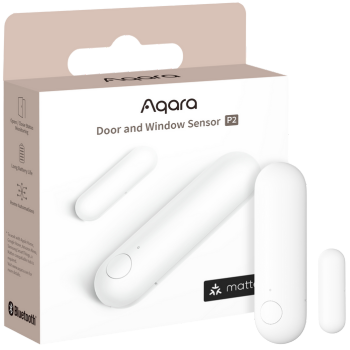

Door and Window Sensor P2
- The Door and Window Sensor P2 includes all the advanced automation and security features Aqara is known for.
- Connects directly to third-party smart home hubs, like smart speakers, that support Thread technology, allowing users to enjoy the benefits of the Matter smart home standard for seamless compatibility and improved performance.
Future-Proofing via OTA |
Local and Remote Alarm |
Long Battery Life |
Tamper Alarm |
1-3cm Adjustable Sensitivity |
Programmable Button |


Product Info
Description
The Aqara Door and Window Sensor P2 is a compact, wireless sensor designed to monitor the status of doors, windows, and other openings in real-time. It operates on the Thread protocol, enabling seamless integration with Matter-compatible smart home ecosystems and enhancing connectivity for faster, more stable communication. With high-precision sensors, it detects changes in the open or closed status of doors or windows, triggering alerts or automations as set by the user. Powered by a replaceable CR2032 battery, it offers long-lasting operation and can be easily installed with adhesive backing, making it an efficient and versatile option for security and smart home automation.
Key Features
- Matter-Ready Compatibility:Embrace the Matter standard with ease—no need to worry about different platforms or protocols. Just use a Matter app and a compatible Thread Border Router for seamless cross-ecosystem connections.
- Real-Time Open/Close Monitoring: Get instant smartphone notifications for any door or window activity, keeping you informed and secure, whether you're at home or on the go.
- Local Automation for Privacy and Reliability: Integrate the Door and Window Sensor P2 into your smart home to enable automations like thermostat adjustments or security camera activation. With local execution, these automations protect your privacy and continue working even without internet access.
- Enhanced Voice Assistant Compatibility: The Aqara Door and Window Sensor P2 supports Apple Siri and Alexa, enabling you to receive entry alerts and check door status by voice, keeping home management hands-free and efficient.
- Quick Setup & Low Maintenance: Its compact, adhesive design allows for easy placement in various locations. Powered by a long-lasting CR123A battery, the sensor minimizes maintenance needs.
- Expanded Features with Aqara Home App: With the Aqara Home app and the upcoming Hub M3, users can fine-tune sensitivity, set custom sleep times, use a programmable button for automations, and receive instant Tamper Alarm alerts in case of sensor tampering.
Specifications
| Category | Sensor |
| Colour | White |
| Model | DW-S02D |
| Wireless Protocols | Thread, BLE 5.0 |
| Bluetooth Operation Frequency | 2402-2480 MHz |
| Bluetooth Maximum Output Power | ≤ 13 dBm |
| Thread Operation Frequency | 2405-2480 MHz |
| Thread Maximum Output Power | ≤ 13 dBm |
| Dimensions | 77 × 22 × 22 mm (Sensor Main Unit) 36 × 11.5 × 7.3 mm (Sensor Accessory Unit) |
| Operating Temperature | -10 °C ~ 50 °C (14 °F ~ 122 °F) |
| Operating Humidity | 0 ~ 95% RH, no condensation |
Gallery
|
 |
 |
| Front Image | Side Image | Product Box |
Automations and Complementary Products
Prevent Unexpected Light Shutdowns in Occupied Rooms:
When the contact sensor detects a door opening, the system will pause the "auto-off" light timer, ensuring lights stay on while the room is in use.
| Required Automation Products: | Door and Window Sensor P2 |
 Hub M3 |
 Presence Sensor FP2 |
Monitor Existing AC Status:
When the contact sensor detects that the AC is already on, it will prevent the IR controller from unnecessarily reactivating the AC.
| Required Automation Products: | Door and Window Sensor P2 |
Hub M3 |
IR Controller |
Save Energy When Doors or Windows Are Open:
If a door or window is opened, the system will automatically turn off the thermostat to conserve energy and reduce your carbon footprint.
| Required Automation Products: | Door and Window Sensor P2 |
Hub M3 |
 Temperature and Humidity Sensor T1 |
IR Controller (Heat pump) |
Automated Alert System:
Part of the Aqara Home alert system, the sensor can arm automatically with a Presence Sensor, sending an instant alert if a door, drawer, or window opens while you’re away.
| Required Automation Products: | Door and Window Sensor P2 |
Hub M3 |
Presence Sensor FP2 |
Concealed Door Installation:
For a discreet setup, the Door and Window Sensor P2 can be installed inside the door using a 23mm drill bit, leaving it invisible while maintaining functionality.
| Required Automation Products: | Door and Window Sensor P2 |
Door with thinkness greater than 30mm |
Product Support Documents
- Step by step installation instruction video (runtime 00:06:07): Installation Video
- Product User Manual (format PDF): User Manual
- Product FAQs (format PDF): Frequently Asked Questions